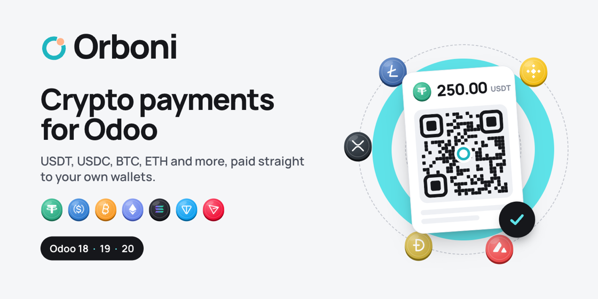
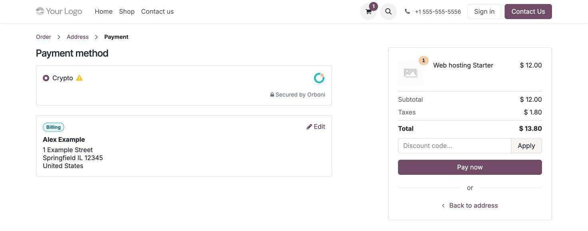
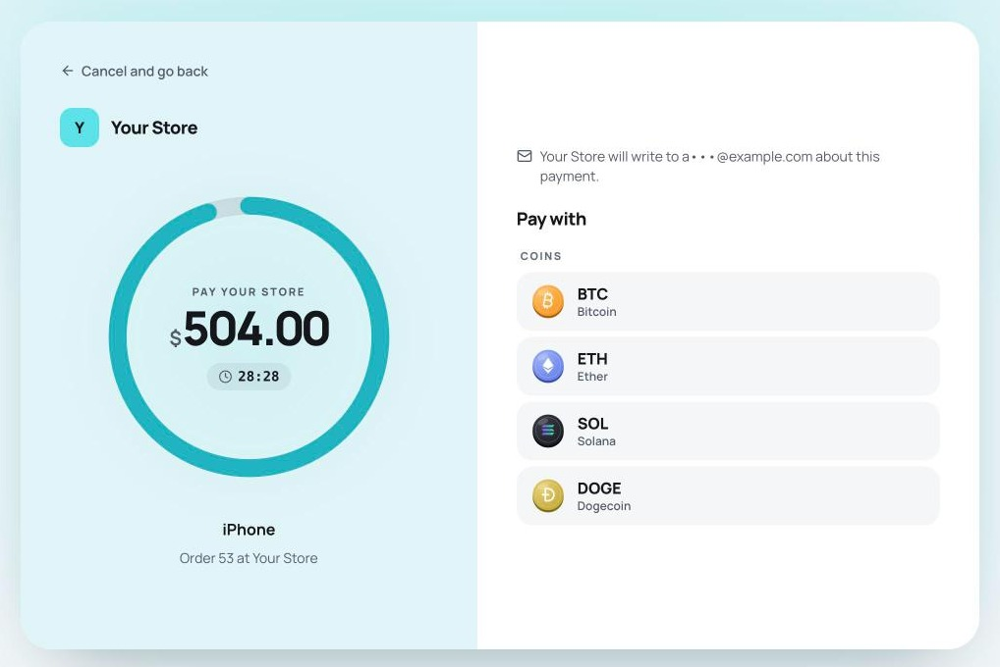
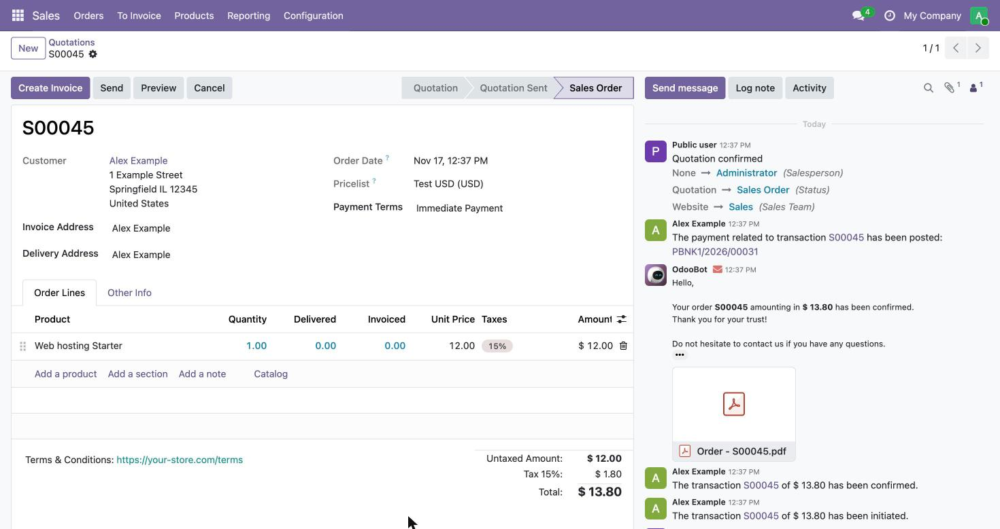
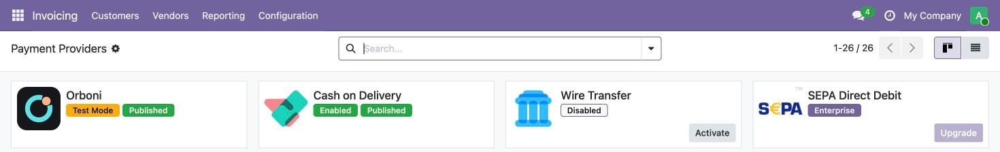
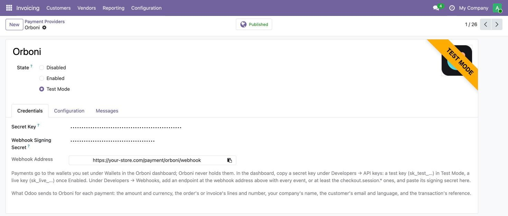

Orboni adds crypto as a payment provider: on the eCommerce checkout, on invoices and orders paid from the customer portal, and on payment links. The customer pays on Orboni's payment page, the money goes to your wallet, and the order or invoice is paid in Odoo once the payment is final on the chain. Orboni never holds your money and never has your keys.


Crypto among the payment methods at checkout (here in Test Mode).

Orboni's payment page: the total in your currency, the coins you take.

Paid: Odoo confirms the order and posts the payment.
sk_test_…) under Developers → API keys into the provider's Secret Key.checkout.session.* events, and paste its signing secret (whsec_…) into Webhook Signing Secret.sk_live_…) and the live endpoint's secret, and go live: State Enabled, or Live on.
Orboni among the payment providers.

The provider's settings: the secret key, the webhook's signing secret and the address to give Orboni.
Nothing is sent until you enter your Orboni keys and the provider is in use, in test mode or live. Then, for each crypto payment, Odoo sends Orboni the amount and currency, the order's or invoice's lines (product name and quantity), its number and your company's name, the transaction's reference, the addresses the customer comes back to, and the customer's email and language. No address, phone number or other customer data is sent. Orboni's payment page and its records are covered by Orboni's privacy policy at orboni.com/page/privacy-policy.
Write to support@orboni.com, or from Help & Support in the Orboni dashboard. The full guide is at orboni.com/docs/odoo.